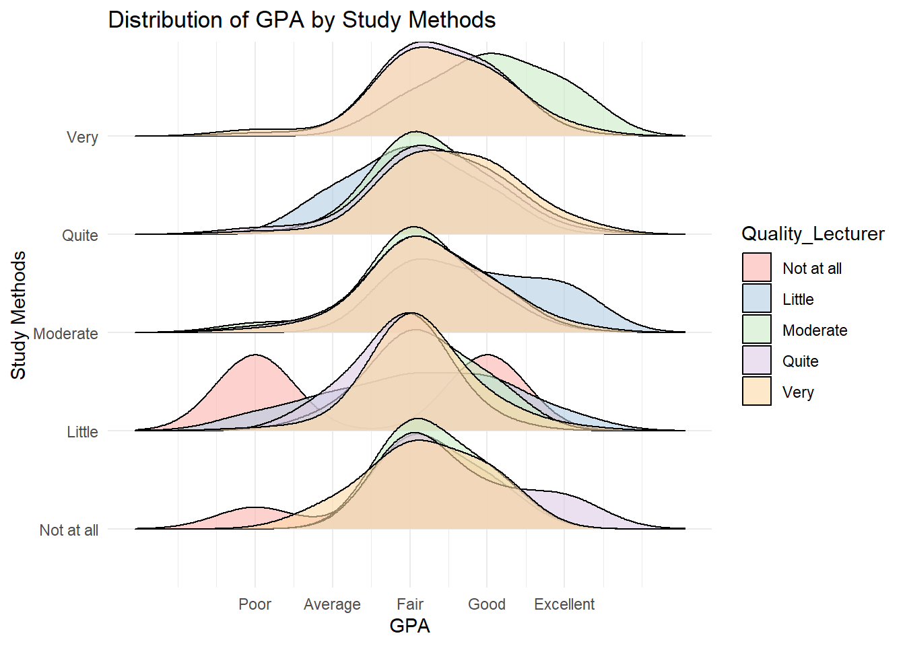
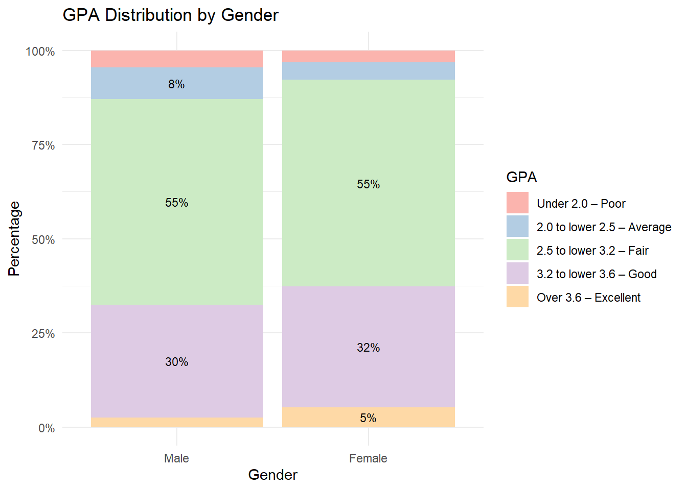
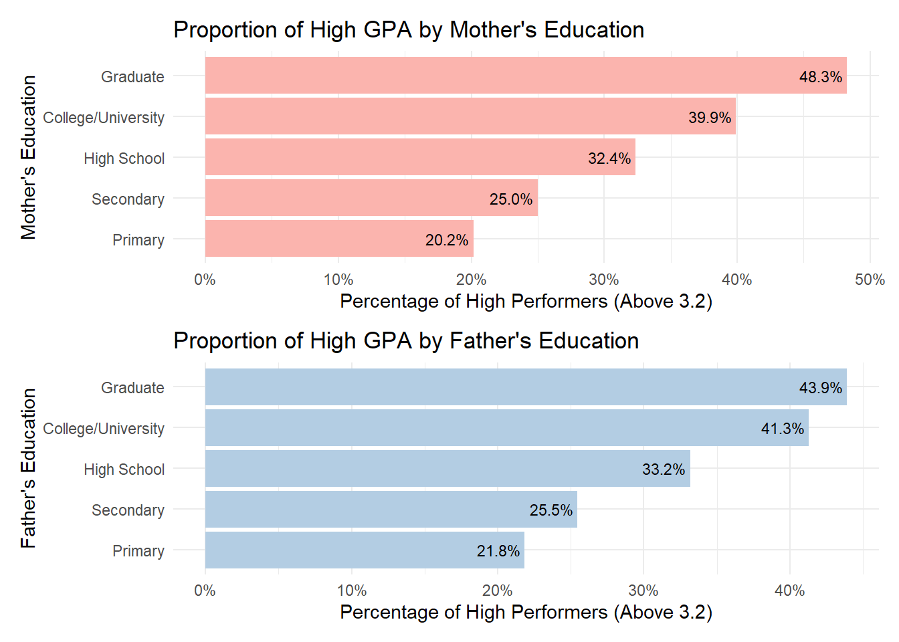
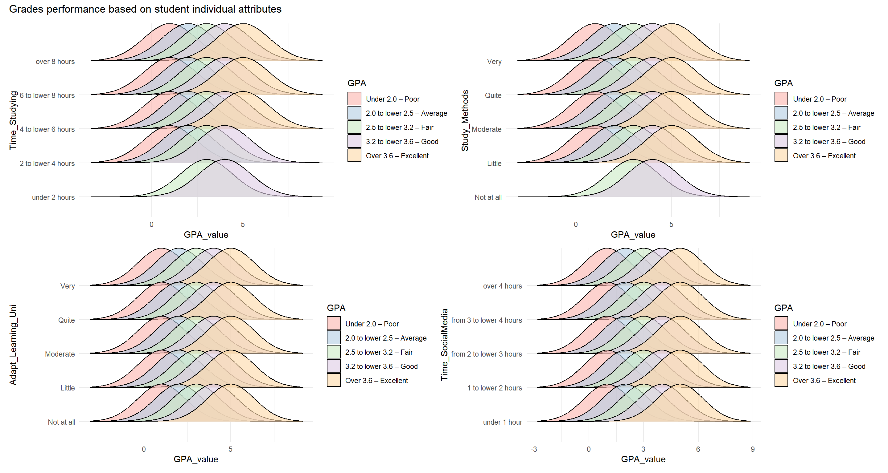
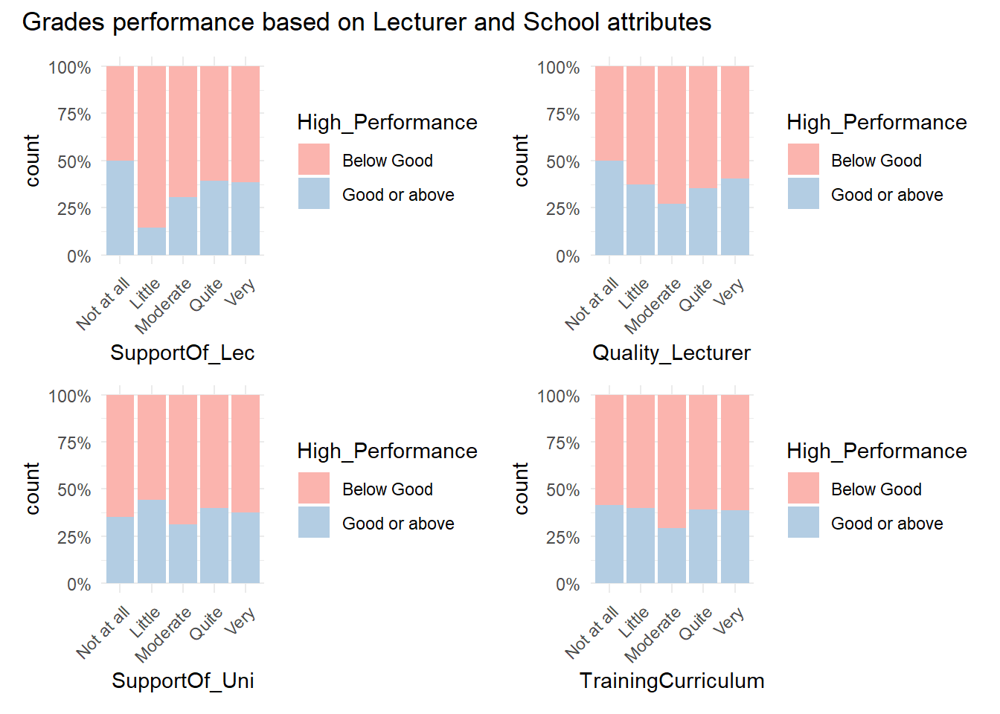
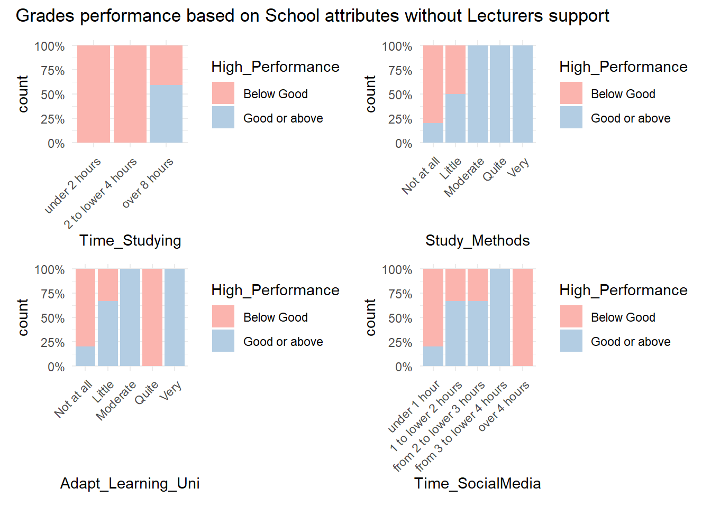

pacman::p_load(readxl,skimr,tidyverse,patchwork,ggridges)Take-home_EX01
1 Introduction
The dataset established by Tran, Nguyen, and Le (2025) collects comprehensive data on students and alumni from the VNU University of Education to identify the internal and external factors that drive academic success. Similar to international assessments, it captures contextual information on student demographics, family socioeconomic status, and institutional factors such as lecturer quality and university facilities. This study provides a rigorous framework for understanding how student learning outcomes, measured by Grade Point Average (GPA), are influenced by the evolving demands of the digital age.
The results from this dataset offer significant insights into the equity and quality of education within the Vietnamese context, allowing educational administrators and policy makers to benchmark performance against global standards. The goal of this research is to shift the focus toward proactive intervention, enabling lecturers and academic advisors to use data-driven insights to improve student motivation and performance. By establishing shared points of reference regarding peer influence, teaching methods, and school support, the dataset encourages a shift from traditional internal reviews to an outward-looking, evidence-based approach to educational management.
The survey was conducted in 2023 and involved a robust sample of 2,170 validated responses from both current students and graduated alumni, providing a longitudinal perspective on the factors affecting learning outcomes.
2 Getting Started
2.1 Setting the Analytical Tools
readxl:To enable the loading of Excel xls file into R environment.skimr: Provides a frictionless approach to summary statistics which conforms to the principle of least surprise, displaying summary statistics the user can skim quickly to understand their data.patchwork: An R package for preparing composit figure created using ggplot2.ggridges: a ggplot extension specially designed for plotting ridgeline plots.
2.2 Data Sources
Dataset of factors affecting learning outcomes of students at the University of Education, Vietnam National University, Hanoi:
https://www.sciencedirect.com/science/article/pii/S2352340925001702
3 Data Preparation
3.1 Data Import
We first load in the dataset and name it student.
student <- read_xlsx("Data/Database paper.xlsx",
sheet="Sheet1")3.2 Data Sanity Checks
Using skimr, we screened for missing data and abnormalities to quickly assess the overall data distribution.
There is no missing values observed.
3.3 High-level observations:
The survey was predominantly conducted among graduated students.
The majority of respondents were female.
Only a minority of students were on government policy support.
Most students reported spending over eight hours per day studying.
The majority of students’ GPA levels fall within the range of Average (2) to Good (4).
Most students reported at least moderate levels of support from both the university and lecturers.
A large proportion of respondents indicated that peer influence and classroom competitiveness have a noticeable impact on their academic performance.
skimr::skim(student)| Name | student |
| Number of rows | 2170 |
| Number of columns | 22 |
| _______________________ | |
| Column type frequency: | |
| numeric | 22 |
| ________________________ | |
| Group variables | None |
Variable type: numeric
| skim_variable | n_missing | complete_rate | mean | sd | p0 | p25 | p50 | p75 | p100 | hist |
|---|---|---|---|---|---|---|---|---|---|---|
| Year | 0 | 1 | 4.67 | 0.59 | 3 | 4 | 5 | 5 | 5 | ▁▁▂▁▇ |
| Gender | 0 | 1 | 1.89 | 0.31 | 1 | 2 | 2 | 2 | 2 | ▁▁▁▁▇ |
| Policy_Stu | 0 | 1 | 1.65 | 0.48 | 1 | 1 | 2 | 2 | 2 | ▅▁▁▁▇ |
| Minority_Stu | 0 | 1 | 1.94 | 0.24 | 1 | 2 | 2 | 2 | 2 | ▁▁▁▁▇ |
| Poor_Stu | 0 | 1 | 1.96 | 0.20 | 1 | 2 | 2 | 2 | 2 | ▁▁▁▁▇ |
| Father_Edu | 0 | 1 | 3.75 | 1.34 | 1 | 3 | 4 | 5 | 6 | ▅▇▅▇▂ |
| Mother_Edu | 0 | 1 | 3.66 | 1.32 | 1 | 3 | 4 | 5 | 6 | ▆▇▇▇▂ |
| Father_Occupation | 0 | 1 | 2.48 | 1.09 | 1 | 2 | 3 | 3 | 5 | ▆▇▇▅▁ |
| Mother_Occupation | 0 | 1 | 2.50 | 1.07 | 1 | 2 | 3 | 3 | 5 | ▆▆▇▅▁ |
| Time_Friends | 0 | 1 | 2.27 | 1.04 | 1 | 1 | 2 | 3 | 5 | ▆▇▆▂▁ |
| Time_SocicalMedia | 0 | 1 | 2.84 | 1.17 | 1 | 2 | 3 | 4 | 5 | ▂▇▇▃▃ |
| Time_Studying | 0 | 1 | 4.72 | 0.71 | 1 | 5 | 5 | 5 | 5 | ▁▁▁▁▇ |
| GPA | 0 | 1 | 3.30 | 0.78 | 1 | 3 | 3 | 4 | 5 | ▁▁▇▅▁ |
| Adapt_Learning_Uni | 0 | 1 | 3.50 | 0.97 | 1 | 3 | 3 | 4 | 5 | ▁▁▇▅▃ |
| Study_Methods | 0 | 1 | 3.66 | 0.93 | 1 | 3 | 4 | 4 | 5 | ▁▁▇▆▅ |
| SupportOf_Uni | 0 | 1 | 4.00 | 0.98 | 1 | 3 | 4 | 5 | 5 | ▁▁▅▆▇ |
| SupportOf_Lec | 0 | 1 | 4.19 | 0.87 | 1 | 4 | 4 | 5 | 5 | ▁▁▃▆▇ |
| Facilitie_Uni | 0 | 1 | 4.07 | 1.00 | 1 | 3 | 4 | 5 | 5 | ▁▁▃▆▇ |
| Quality_Lecturer | 0 | 1 | 4.33 | 0.83 | 1 | 4 | 5 | 5 | 5 | ▁▁▂▅▇ |
| TrainingCurriculum | 0 | 1 | 4.13 | 0.86 | 1 | 4 | 4 | 5 | 5 | ▁▁▅▇▇ |
| Competitive_Class | 0 | 1 | 3.94 | 0.89 | 1 | 3 | 4 | 5 | 5 | ▁▁▆▇▇ |
| InfuenceF_Friends | 0 | 1 | 3.83 | 0.89 | 1 | 3 | 4 | 5 | 5 | ▁▁▇▇▆ |
3.4 Data Types Conversion
- Now we take a look at some of the data sample using
glimpseand also to ensure the data type are set correctly.
glimpse(student)Rows: 2,170
Columns: 22
$ Year <dbl> 5, 5, 5, 5, 5, 5, 5, 5, 5, 5, 5, 5, 5, 5, 5, 5, 5, …
$ Gender <dbl> 2, 1, 2, 2, 1, 2, 2, 2, 2, 2, 1, 2, 2, 2, 2, 2, 2, …
$ Policy_Stu <dbl> 2, 2, 2, 2, 1, 2, 2, 2, 2, 2, 2, 2, 2, 1, 2, 2, 2, …
$ Minority_Stu <dbl> 2, 2, 2, 2, 2, 2, 2, 2, 2, 2, 2, 2, 2, 2, 2, 2, 2, …
$ Poor_Stu <dbl> 2, 2, 2, 2, 2, 2, 2, 2, 2, 2, 2, 2, 2, 2, 2, 2, 2, …
$ Father_Edu <dbl> 4, 3, 4, 5, 2, 5, 6, 5, 5, 5, 3, 3, 3, 3, 3, 4, 5, …
$ Mother_Edu <dbl> 4, 3, 4, 4, 3, 5, 5, 4, 5, 4, 3, 3, 3, 4, 3, 4, 5, …
$ Father_Occupation <dbl> 2, 2, 1, 1, 3, 1, 1, 5, 1, 3, 3, 3, 3, 3, 2, 2, 4, …
$ Mother_Occupation <dbl> 3, 4, 2, 1, 3, 2, 4, 3, 1, 3, 3, 3, 3, 3, 2, 2, 4, …
$ Time_Friends <dbl> 2, 1, 1, 2, 1, 1, 2, 2, 1, 3, 2, 2, 2, 2, 2, 1, 3, …
$ Time_SocicalMedia <dbl> 2, 3, 2, 2, 2, 3, 2, 2, 2, 2, 2, 1, 2, 2, 2, 3, 4, …
$ Time_Studying <dbl> 5, 5, 5, 5, 1, 2, 5, 5, 5, 5, 5, 5, 5, 1, 5, 5, 5, …
$ GPA <dbl> 4, 3, 4, 4, 4, 4, 3, 5, 5, 3, 3, 4, 4, 3, 5, 4, 4, …
$ Adapt_Learning_Uni <dbl> 4, 3, 4, 4, 5, 4, 4, 4, 4, 3, 4, 4, 4, 5, 4, 4, 5, …
$ Study_Methods <dbl> 4, 3, 4, 4, 5, 4, 4, 4, 4, 4, 4, 4, 4, 5, 4, 3, 5, …
$ SupportOf_Uni <dbl> 3, 3, 4, 5, 5, 5, 5, 5, 4, 5, 4, 4, 4, 5, 4, 4, 5, …
$ SupportOf_Lec <dbl> 4, 4, 4, 5, 5, 4, 5, 4, 4, 5, 4, 4, 4, 5, 4, 4, 5, …
$ Facilitie_Uni <dbl> 4, 4, 3, 5, 5, 5, 5, 4, 4, 5, 4, 4, 4, 5, 4, 3, 5, …
$ Quality_Lecturer <dbl> 4, 3, 4, 5, 5, 5, 4, 5, 5, 5, 4, 4, 4, 5, 4, 4, 5, …
$ TrainingCurriculum <dbl> 4, 3, 4, 4, 5, 4, 5, 4, 4, 5, 4, 4, 4, 5, 4, 3, 5, …
$ Competitive_Class <dbl> 3, 3, 4, 4, 4, 3, 4, 3, 4, 4, 4, 4, 4, 5, 4, 4, 5, …
$ InfuenceF_Friends <dbl> 3, 4, 4, 4, 5, 3, 5, 4, 4, 4, 4, 4, 4, 5, 4, 5, 4, …- We will proceed to rename some column with typo names.
Code
student <- student %>%
rename(
Time_SocialMedia = any_of('Time_SocicalMedia'),
InfluenceOF_Friends = any_of('InfuenceF_Friends')
)- The data type and variable is then changed and re-labeled to bring in context:
Code
student <- student %>%
mutate(
Year = factor(
Year,
levels = 3:5,
labels = c("Third-year", "Fourth-year", "Graduated"),
ordered = TRUE),
Gender = factor(Gender,
levels = c(1, 2),
labels = c("Male", "Female")),
Policy_Stu = factor(Policy_Stu,
levels = c(1, 2),
labels = c("Yes", "No")),
Minority_Stu = factor(Minority_Stu,
levels = c(1, 2),
labels = c("Yes", "No")),
Poor_Stu = factor(Poor_Stu,
levels = c(1, 2),
labels = c("Yes", "No")
),
GPA = factor(GPA,
levels = 1:5,
labels = c("Under 2.0 – Poor","2.0 to lower 2.5 – Average","2.5 to lower 3.2 – Fair",
"3.2 to lower 3.6 – Good","Over 3.6 – Excellent"),
ordered = TRUE),
GPA_value = as.numeric(GPA),
Time_Studying = factor(Time_Studying,
levels = 1:5,
labels = c("under 2 hours","2 to lower 4 hours","4 to lower 6 hours","6 to lower 8 hours","over 8 hours"),
ordered = TRUE),
across(c(Father_Edu, Mother_Edu),
~factor(.x,
levels = 1:6,
labels = c(
"Primary",
"Secondary",
"High School",
"College/University",
"Graduate",
"Not Public"),
ordered = TRUE)),
across(c(Father_Occupation, Mother_Occupation),
~factor(.x,
levels = 1:5,
labels = c(
"Government employee",
"Self-employment",
"Freelance",
"Other",
"Not Public"),
ordered = FALSE)),
across(c(Time_Friends, Time_SocialMedia),
~ factor(.x,
levels = 1:5,
labels = c("under 1 hour","1 to lower 2 hours","from 2 to lower 3 hours","from 3 to lower 4 hours","over 4 hours"),
ordered = TRUE)),
across(c(Adapt_Learning_Uni, Study_Methods, SupportOf_Uni,
SupportOf_Lec, Facilitie_Uni, Quality_Lecturer,
TrainingCurriculum, InfluenceOF_Friends,Competitive_Class),
~ factor(.x,
levels = 1:5,
labels = c("Not at all","Little","Moderate","Quite","Very"),
ordered = TRUE)
))- Finally a final check is done to ensure the data are prepared accordingly.
Code
glimpse(student)Rows: 2,170
Columns: 23
$ Year <ord> Graduated, Graduated, Graduated, Graduated, Gradua…
$ Gender <fct> Female, Male, Female, Female, Male, Female, Female…
$ Policy_Stu <fct> No, No, No, No, Yes, No, No, No, No, No, No, No, N…
$ Minority_Stu <fct> No, No, No, No, No, No, No, No, No, No, No, No, No…
$ Poor_Stu <fct> No, No, No, No, No, No, No, No, No, No, No, No, No…
$ Father_Edu <ord> College/University, High School, College/Universit…
$ Mother_Edu <ord> College/University, High School, College/Universit…
$ Father_Occupation <fct> Self-employment, Self-employment, Government emplo…
$ Mother_Occupation <fct> Freelance, Other, Self-employment, Government empl…
$ Time_Friends <ord> 1 to lower 2 hours, under 1 hour, under 1 hour, 1 …
$ Time_SocialMedia <ord> 1 to lower 2 hours, from 2 to lower 3 hours, 1 to …
$ Time_Studying <ord> over 8 hours, over 8 hours, over 8 hours, over 8 h…
$ GPA <ord> 3.2 to lower 3.6 – Good, 2.5 to lower 3.2 – Fair, …
$ Adapt_Learning_Uni <ord> Quite, Moderate, Quite, Quite, Very, Quite, Quite,…
$ Study_Methods <ord> Quite, Moderate, Quite, Quite, Very, Quite, Quite,…
$ SupportOf_Uni <ord> Moderate, Moderate, Quite, Very, Very, Very, Very,…
$ SupportOf_Lec <ord> Quite, Quite, Quite, Very, Very, Quite, Very, Quit…
$ Facilitie_Uni <ord> Quite, Quite, Moderate, Very, Very, Very, Very, Qu…
$ Quality_Lecturer <ord> Quite, Moderate, Quite, Very, Very, Very, Quite, V…
$ TrainingCurriculum <ord> Quite, Moderate, Quite, Quite, Very, Quite, Very, …
$ Competitive_Class <ord> Moderate, Moderate, Quite, Quite, Quite, Moderate,…
$ InfluenceOF_Friends <ord> Moderate, Quite, Quite, Quite, Very, Moderate, Ver…
$ GPA_value <dbl> 4, 3, 4, 4, 4, 4, 3, 5, 5, 3, 3, 4, 4, 3, 5, 4, 4,…Code
skimr::skim(student)| Name | student |
| Number of rows | 2170 |
| Number of columns | 23 |
| _______________________ | |
| Column type frequency: | |
| factor | 22 |
| numeric | 1 |
| ________________________ | |
| Group variables | None |
Variable type: factor
| skim_variable | n_missing | complete_rate | ordered | n_unique | top_counts |
|---|---|---|---|---|---|
| Year | 0 | 1 | TRUE | 3 | Gra: 1594, Fou: 441, Thi: 135 |
| Gender | 0 | 1 | FALSE | 2 | Fem: 1930, Mal: 240 |
| Policy_Stu | 0 | 1 | FALSE | 2 | No: 1404, Yes: 766 |
| Minority_Stu | 0 | 1 | FALSE | 2 | No: 2041, Yes: 129 |
| Poor_Stu | 0 | 1 | FALSE | 2 | No: 2084, Yes: 86 |
| Father_Edu | 0 | 1 | TRUE | 6 | Gra: 643, Hig: 603, Col: 370, Sec: 274 |
| Mother_Edu | 0 | 1 | TRUE | 6 | Hig: 592, Gra: 502, Col: 495, Sec: 294 |
| Father_Occupation | 0 | 1 | FALSE | 5 | Fre: 650, Sel: 565, Gov: 514, Oth: 409 |
| Mother_Occupation | 0 | 1 | FALSE | 5 | Fre: 695, Sel: 557, Gov: 491, Oth: 405 |
| Time_Friends | 0 | 1 | TRUE | 5 | 1 t: 785, fro: 590, und: 557, fro: 152 |
| Time_SocialMedia | 0 | 1 | TRUE | 5 | 1 t: 735, fro: 634, fro: 306, ove: 266 |
| Time_Studying | 0 | 1 | TRUE | 5 | ove: 1783, 6 t: 245, 4 t: 78, 2 t: 47 |
| GPA | 0 | 1 | TRUE | 5 | 2.5: 1189, 3.2: 692, 2.0: 109, Ove: 107 |
| Adapt_Learning_Uni | 0 | 1 | TRUE | 5 | Mod: 954, Qui: 606, Ver: 388, Lit: 152 |
| Study_Methods | 0 | 1 | TRUE | 5 | Mod: 869, Qui: 674, Ver: 474, Lit: 120 |
| SupportOf_Uni | 0 | 1 | TRUE | 5 | Ver: 830, Qui: 675, Mod: 553, Lit: 61 |
| SupportOf_Lec | 0 | 1 | TRUE | 5 | Ver: 968, Qui: 706, Mod: 448, Lit: 28 |
| Facilitie_Uni | 0 | 1 | TRUE | 5 | Ver: 927, Qui: 677, Mod: 399, Lit: 131 |
| Quality_Lecturer | 0 | 1 | TRUE | 5 | Ver: 1152, Qui: 636, Mod: 342, Lit: 24 |
| TrainingCurriculum | 0 | 1 | TRUE | 5 | Ver: 869, Qui: 779, Mod: 465, Lit: 45 |
| Competitive_Class | 0 | 1 | TRUE | 5 | Qui: 772, Ver: 680, Mod: 629, Lit: 76 |
| InfluenceOF_Friends | 0 | 1 | TRUE | 5 | Qui: 797, Mod: 707, Ver: 564, Lit: 82 |
Variable type: numeric
| skim_variable | n_missing | complete_rate | mean | sd | p0 | p25 | p50 | p75 | p100 | hist |
|---|---|---|---|---|---|---|---|---|---|---|
| GPA_value | 0 | 1 | 3.3 | 0.78 | 1 | 3 | 3 | 4 | 5 | ▁▁▇▅▁ |
3.3 Calculations and Filters
3.3.1 Cumulative count % across GPA order
gpa_cum <- student %>%
count(GPA) %>%
arrange(GPA) %>%
mutate(
pct = n / sum(n),
cum_pct = cumsum(pct)
)3.3.2 Count % of GPA across Gender Demographic
gpa_pct <- student %>%
count(Gender, GPA) %>%
group_by(Gender) %>%
mutate(pct = n / sum(n))3.3.3 Filtered view for parents’ educational level
Filter to only include observations where both mother’s and father’s education levels were reported.
GPA categories were grouped into two performance levels:
Good or above: Good and Excellent
Below Good: Poor, Average, and Fair
student_parent_edu <- student %>%
filter(Mother_Edu != "Not Public",
Father_Edu != "Not Public") %>%
mutate(
High_Performance = ifelse(GPA %in% c("3.2 to lower 3.6 – Good", "Over 3.6 – Excellent"),
"Good or above",
"Below Good"),
High_Performance = factor(High_Performance,
levels = c("Below Good", "Good or above"))
)3.3.4 Grouping of GPA
Similar to above (3.3.3) except that there is no filter applied.
GPA categories were grouped into two performance levels:
Good or above: Good and Excellent
Below Good: Poor, Average, and Fair
student_gpa <- student %>%
mutate(
High_Performance = ifelse(GPA %in% c("3.2 to lower 3.6 – Good", "Over 3.6 – Excellent"),
"Good or above",
"Below Good"),
High_Performance = factor(High_Performance,
levels = c("Below Good", "Good or above"))
)3.3.5 Filter for Support of Lecturer
Base on above filtered view (3.3.4), we limit the scope to where the support from lecturer is zero.
student_gpa1 <- student_gpa %>%
filter(SupportOf_Lec == "Not at all")4 Exploratory Data Analysis
Observation 1:
Most respondents have GPA 2.5 (Fair) or higher.
Students with GPA performance at the Average level or below account for only 8.4% of the sample.
Code
ggplot(gpa_cum, aes(x = GPA)) +
geom_col(aes(y = n, fill = "Count")) +
geom_line(
aes(y = cum_pct * max(n), colour = "Cumulative %", group = 1,),
linewidth = 0.7
) +
geom_point(
aes(y = cum_pct * max(n), colour = "Cumulative %"),
linewidth = 2
) +
geom_text(
aes(
y = cum_pct * max(n),
label = scales::percent(cum_pct, accuracy = 0.1)
),
vjust = -0.8,
colour = "Black",
linewidth = 3
) +
scale_fill_manual(
values = c("Count" = "#B3CDE3"),
name = ""
) +
scale_colour_manual(
values = c("Cumulative %" = "Black"),
name = ""
) +
labs(
title = "GPA Distribution with Cumulative Percentage",
x = "GPA Category",
y = "Number of Students"
) +
theme_minimal()+
theme(
axis.text.x = element_text(angle = 45, hjust = 1)
)
Observation 2:
Aproximately 5% gap in top academic performance (GPA 3.2 and above) is observed, with 37% of female students attaining above 3.2 GPA (Good) compared to about 32% of male students.
Code
gpa <- ggplot(gpa_pct, aes(x = Gender, y = pct, fill = GPA)) +
geom_col() +
geom_text(
aes(label = ifelse(pct >= 0.05, scales::percent(pct, accuracy = 1),"")),
position = position_stack(vjust = 0.5),
size = 3
) +
scale_y_continuous(labels = scales::percent) +
scale_fill_brewer(palette = "Pastel1") +
labs(
title = "GPA Distribution by Gender",
x = "Gender",
y = "Percentage"
) +
theme_minimal()
gpa
Observation 3:
The plot below illustrates how the percentage of students achieving a GPA classified as Good or above increases with higher levels of parental education, for both fathers and mothers.
For each parental education level, the percentage of students (pct) in the newly defined performance group was calculated relative to the total number of students within that education category. This allows comparison of high academic performance across different parental education levels.
Code
mom_plot <- student_parent_edu %>%
count(Mother_Edu, High_Performance) %>%
group_by(Mother_Edu) %>%
mutate(pct = n / sum(n)) %>%
filter(High_Performance == "Good or above") %>%
ggplot(aes(x = Mother_Edu, y = pct)) +
geom_col(fill = "#FBB4AE") +
coord_flip() +
scale_y_continuous(labels = scales::percent_format()) +
labs(
title = "Proportion of High GPA by Mother's Education",
x = "Mother's Education",
y = "Percentage of High Performers (Above 3.2)"
) +
geom_text(
aes(label = scales::percent(pct, accuracy = 0.1)),
hjust = 1.1,
size = 3)+
theme_minimal()
father_plot <- student_parent_edu %>%
count(Father_Edu, High_Performance) %>%
group_by(Father_Edu) %>%
mutate(pct = n / sum(n)) %>%
filter(High_Performance == "Good or above") %>%
ggplot(aes(x = Father_Edu, y = pct)) +
geom_col(fill = "#B3CDE3") +
coord_flip() +
scale_y_continuous(labels = scales::percent_format()) +
labs(
title = "Proportion of High GPA by Father's Education",
x = "Father's Education",
y = "Percentage of High Performers (Above 3.2)"
)+
geom_text(
aes(label = scales::percent(pct, accuracy = 0.1)),
hjust = 1.1,
size = 3
) +
theme_minimal()
mom_plot / father_plot
Observation 4:
Looking at the student individual trait on the below, we noted that student that scored over 3.6 GPA (Excellent):
Spent at least 4 hours studying on average per day
Report at least a little and above effectiveness of studying methods
Not much observation on the GPA are seen against learning adaptation and time spent on social media
Code
method <- ggplot(student,
aes(x = GPA_value, y = Study_Methods, fill = GPA)) +
geom_density_ridges(alpha = 0.6, scale = 1.1) +
theme_minimal()+
scale_fill_brewer(palette = "Pastel1")
time <- ggplot(student,
aes(x = GPA_value, y = Time_Studying, fill = GPA)) +
geom_density_ridges(alpha = 0.6, scale = 1.1) +
theme_minimal()+
scale_fill_brewer(palette = "Pastel1")
adapt <- ggplot(student,
aes(x = GPA_value, y = Adapt_Learning_Uni, fill = GPA)) +
geom_density_ridges(alpha = 0.6, scale = 1.1) +
theme_minimal()+
scale_fill_brewer(palette = "Pastel1")
social <- ggplot(student,
aes(x = GPA_value, y = Time_SocialMedia, fill = GPA)) +
geom_density_ridges(alpha = 0.6, scale = 1.1) +
theme_minimal()+
scale_fill_brewer(palette = "Pastel1")
(time|method)/(adapt|social)+
plot_annotation(title = "Grades performance based on student individual attributes")
Observation 5:
From the perspective of university-driven factors, several noteworthy patterns emerge. Approximately half of the students achieved a GPA of 3.2 (Good) or above despite reporting the lowest levels of lecturer quality and support, particularly in relation to lecturer support.
When some level of lecturer support is present, a higher proportion of students attain a GPA of 3.2 or above, particularly within the “Little” to “Quite” support categories. This suggests a moderate positive association between lecturer support and academic performance.
In contrast, perceived university support and the quality of the training curriculum display mixed results, with no clear or consistent trend observed in relation to GPA performance.
Code
Support_uni <- ggplot(student_gpa, aes(x = SupportOf_Uni, fill = High_Performance)) +
geom_bar(position = "fill") +
scale_fill_brewer(palette = "Pastel1")+
scale_y_continuous(labels = scales::percent) +
theme_minimal()+
theme(
axis.text.x = element_text(angle = 45, hjust = 1)
)
Support_lec <- ggplot(student_gpa, aes(x = SupportOf_Lec, fill = High_Performance)) +
geom_bar(position = "fill") +
scale_fill_brewer(palette = "Pastel1") +
scale_y_continuous(labels = scales::percent)+
theme_minimal()+
theme(
axis.text.x = element_text(angle = 45, hjust = 1)
)
quality <- ggplot(student_gpa, aes(x = Quality_Lecturer, fill = High_Performance)) +
geom_bar(position = "fill") +
scale_fill_brewer(palette = "Pastel1") +
scale_y_continuous(labels = scales::percent)+
theme_minimal()+
theme(
axis.text.x = element_text(angle = 45, hjust = 1)
)
Curriculum <- ggplot(student_gpa, aes(x = TrainingCurriculum, fill = High_Performance)) +
geom_bar(position = "fill") +
scale_fill_brewer(palette = "Pastel1")+
scale_y_continuous(labels = scales::percent) +
theme_minimal()+
theme(
axis.text.x = element_text(angle = 45, hjust = 1)
)
(Support_lec | quality) / (Support_uni|Curriculum)+
plot_annotation(title = "Grades performance based on Lecturer and School attributes")
Observation 6:
Focusing on the subgroup of students who reported no support from lecturers, the following observations were identified:
Time_studying:
Among students without lecturer support, achieving a GPA of Good or above appears to require studying at least eight hours per day on average.
Students studying fewer hours tend to fall below the Good GPA category.
Study_method:
Perceived effectiveness of study methods aligns positively with GPA performance.
Students who rated their study methods as Moderate or higher predominantly attained Good or above results.
Adapt_Learning_Uni:
Adaptation level shows a generally positive association with GPA performance.
However, students within the “Quite” adaptation category were observed to fall below the Good GPA level, indicating a deviation from the overall pattern.
Time_SocialMedia:
Interestingly, time spent on social media appears to be positively associated with GPA performance when usage is below four hours per day.
The dataset does not differentiate between academic and non-academic use and further investigation would be required to better understand the mechanisms underlying these patterns.
Code
low_sup_time <- ggplot(student_gpa1, aes(x = Time_Studying, fill = High_Performance)) +
geom_bar(position = "fill") +
scale_fill_brewer(palette = "Pastel1")+
scale_y_continuous(labels = scales::percent) +
theme_minimal()+
theme(
axis.text.x = element_text(angle = 45, hjust = 1)
)
low_sup_methods <- ggplot(student_gpa1, aes(x = Study_Methods, fill = High_Performance)) +
geom_bar(position = "fill") +
scale_fill_brewer(palette = "Pastel1")+
scale_y_continuous(labels = scales::percent) +
theme_minimal()+
theme(
axis.text.x = element_text(angle = 45, hjust = 1)
)
low_sup_adaptation <- ggplot(student_gpa1, aes(x = Adapt_Learning_Uni, fill = High_Performance)) +
geom_bar(position = "fill") +
scale_fill_brewer(palette = "Pastel1")+
scale_y_continuous(labels = scales::percent) +
theme_minimal()+
theme(
axis.text.x = element_text(angle = 45, hjust = 1)
)
low_sup_social <- ggplot(student_gpa1, aes(x = Time_SocialMedia, fill = High_Performance)) +
geom_bar(position = "fill") +
scale_fill_brewer(palette = "Pastel1")+
scale_y_continuous(labels = scales::percent) +
theme_minimal()+
theme(
axis.text.x = element_text(angle = 45, hjust = 1)
)
(low_sup_time | low_sup_methods) / (low_sup_adaptation | low_sup_social)+
plot_annotation(title = "Grades performance based on School attributes without Lecturers support")
5 Summary
This analysis is based on a selected survey sample and may not fully represent the broader student population. As such, the findings should be interpreted with caution due to potential sampling bias. In addition, the reliance on Likert-scale measures introduces subjectivity, as responses may reflect individual biasness. Variables such as adaptation to university learning, study methods, and perceived lecturer quality may therefore be influenced by personal interpretation.
Among the factors examined, parental education and time spent studying demonstrate the most consistent positive associations with higher GPA. Institutional factors, including university support and training curriculum, show comparatively weaker and less consistent relationships. Interestingly, some high-performing students report minimal lecturer support, which may indicate stronger intrinsic motivation or greater independent learning capability rather than an absence of institutional influence.
Overall, the observed association between parental education and academic performance highlights the potential influence of family socioeconomic background on student outcomes.
5.1 Key Findings
Most respondents achieved a GPA of 2.5 (Fair) or higher.
Female students were observed to have a higher proportion of GPAs at 3.2 (Good) or above. However, this difference should be interpreted cautiously, as the survey sample consisted predominantly of female respondents.
Parental education appears to be associated with students’ academic performance. Higher parental educational attainment is linked to a greater likelihood of achieving higher GPAs, with the association appearing stronger for mothers, particularly at the graduate level.
A positive relationship is observed between time spent studying and GPA, suggesting that greater study time is associated with improved academic outcomes.
The relationship between time spent on social media and GPA is mixed. This may indicate that moderate social media use does not necessarily hinder performance and could potentially serve as a supplementary learning resource.
In cases where lecturer support was absent, the results are less consistent.
Students reporting minimal support tended to show stronger GPA outcomes.
Interestingly, students reporting no lecturer support exhibited the highest proportion of GPAs at 3.2 or above across support levels.
Further examination suggests that longer study time, more effective study methods, and patterns of social media use may compensate for limited lecturer support in achieving higher academic performance.
5.2 Recommendation for Future Work
Further investigation is needed to better understand the extent of parental engagement in students’ education, as educational attainment alone may not fully reflect the level of involvement or support provided at home.
In addition, examining the specific purposes of social media use (i.e for entertainment, communication, or academic learning) would allow for a more accurate interpretation of its relationship with academic performance.
As the current analysis is largely descriptive, additional statistical tests could be conducted to formally statitically support the observed relationships.
The observation that students reporting no lecturer support nonetheless perform well warrants further examination. This may help clarify whether individual independence or self-directed learning plays a significant role in academic achievement.
6 References and Inspiration
Kam, Tin Seong. (2025).1 A Layered Grammar of Graphics: ggplot2 methods – R for Visual Analytics. (2023, December 4). Netlify.app. https://r4va.netlify.app/chap01
Kam, Tin Seong. (2025).9 Visualising Distribution – R for Visual Analytics. (2023, April 12). Netlify.app. https://r4va.netlify.app/chap09
Tools for Working with Categorical Variables (Factors). (n.d.). Forcats.tidyverse.org. https://forcats.tidyverse.org/
ggplot2. (2024). Introduction to ggplot2. Tidyverse.org. https://ggplot2.tidyverse.org/articles/ggplot2.html
Hehman, E., & Xie, S. Y. (2021). Doing Better Data Visualization. Advances in Methods and Practices in Psychological Science, 4(4), 251524592110453. https://doi.org/10.1177/25152459211045334